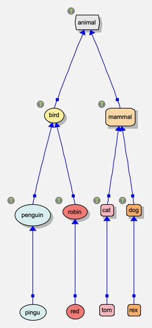
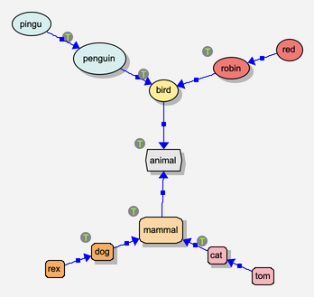
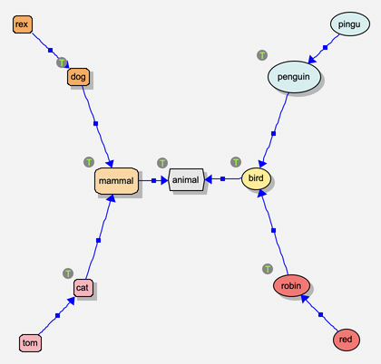
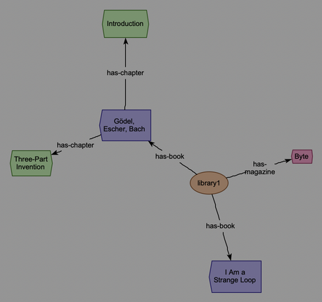

Arranging a View¶
You can put everything where you want it by dragging (see Editing), but the program can arrange a view for you too. The background menu’s view | layout has three kinds of layout:
- arrange now
Arrange the view once, all at once: what moves glides to its new place. It’s one command, so Cmd-Z puts everything back.
- keep arranged
Choose the layout that keeps the view arranged as it changes: after each change (something made, shown, erased, dropped…), it arranges things again, as part of the same command – so undoing the change undoes the rearranging too. A view has one of these at a time; the menu ticks it. The default, avoid overlaps, only finds a clear place for what’s new, and nudges what you drop off whatever it landed on.
- animate
The animation layout: objects push and pull one another until they settle, and you watch it happen. See Animation Layout.
A layout with settings (its menu item ends with “…”) opens its page in the layout panel (see below), to choose them there; one without is done straight away. A view saves which layout keeps it arranged, and the settings you used, with the view.
What’s arranged is the nodes shown – and the relation types shown, which are arranged just as nodes are (eg: has-parent under has-ancestor, by isa). Individual relations follow their ends; context windows (rules, queries, …) and what’s in them are left as they are; and what’s hidden stays where it is.
The layout panel¶
View | Layout panel (in the menu bar), or view | layout | layout panel… on the background menu, shows a panel at the right of the window, beside the canvas, for trying layouts out. Drag its divider to make it wider or narrower; drag it most of the way to the right, or click the × at its top, and it closes. While it’s closed, a narrow strip with a ‹ runs down the window’s right edge: click it, or drag it out, to open the panel again.
At its top, Arrange now, Keep arranged and Animate switch between the three kinds of layout. For the first two, a list of the layouts of that kind is under them – the one keeping the view arranged is ticked – and choosing one shows its page.
Under them is a bar of buttons, which stays put however far the page below is scrolled. For a layout: Arrange (arrange the view with it once: one command, so Cmd-Z puts everything back) or Use (make it the layout that keeps the view arranged), and Revert (put back the settings it was last used with). For Animate: the animation layout’s start/stop button and what it’s doing (see Animation Layout).
A layout’s page has its settings, starting with the ones you used last time in this view. Settings you’ve changed but not yet used are kept while you look at other pages.
The Animate page has the animation layout’s settings: see Animation Layout.
Whether the panel’s shown, what it shows, and how wide it is are saved with the view.
The layouts¶
layout |
arrange now |
keep arranged |
what it does |
|---|---|---|---|
tree |
yes |
yes |
trees by relation types, in levels |
balloon |
yes |
yes |
trees, each node’s children in a ring round it |
radial |
yes |
yes |
trees, each level on a circle round the root |
hubs |
yes |
yes |
the most connected nodes as hubs, the rest round them |
gather nodes |
yes |
pulls in objects that have strayed far from the rest |
|
avoid overlaps |
yes |
(the default) places what’s new, and what’s dropped |
|
none |
yes |
leaves things where they are |
Trees¶
The tree, balloon and radial layouts all see the nodes as trees, by relation types: by isa, a type is the parent of its subtypes and instances; by has-parent, a parent of their children; by includes, a package of its modules. They ask:
- Relations
A table of the relation types shown in the view, and their supertypes, as a tree – each subtype indented under its supertype – with what each does:
parent: destination or parent: source: it shapes the tree: its relations relate parents to children. The parent is the relation’s destination for isa (dog isa animal: the parent is animal) and for
has-*relations (carol has-parent alice), and its source for relations like includes (a package includes its modules).pulls together: its relations don’t make trees, but they’re what joins trees (see Trees related to one another) and puts the nodes in no tree near what they’re related to.
ignored: its relations don’t count at all.
as a supertype: it has no row of its own: it does what its nearest supertype with a row does (or, if none has one, pulls together).
So a row for a supertype stands for all its subtypes, unless one has a row of its own: eg: for the XML reader’s models, one for xml-has-part does for every has-… relation. A supertype’s ▸ shows its subtypes (▾ hides them again): it starts closed, unless one of them has a row of its own. A node’s children are grouped by the row they’re related by, then by which of its relation type’s subtypes (eg: a package’s modules, then its sub-packages). The higher rows win: a node with two parents goes under the one related by the higher row – move a relation type (with its subtypes) up or down among its siblings with its ↑ and ↓. The row (domain and range of relation types) is the relation types’ own ends: as if each relation type shown were related to its domain and its range (the parent is the destination: the relation type goes under them, if the row shapes the tree).
To start with, isa shapes the trees, and everything else pulls together.
- Grows (tree only)
Which way the trees grow, from the root to the leaves: right, down, left or up.
- Space between neighbours
How far apart neighbouring nodes are kept.
- Compact (tree only)
Tuck subtrees in beside each other where there’s room, rather than giving each a band of its own: smaller, for big, uneven trees.
- Nodes in no tree
What to do with the nodes that aren’t in any tree: leave them where they are; put them in rows after the trees; or put each near what it’s related to (and those related to nothing in rows).
- Trees related to one another (balloon and radial only)
What to do with a tree whose root is related – by a row that pulls together (or shapes the trees) – to a node in another tree: joined, it goes out beyond that node, as if it were one of its children, so the trees make one drawing; apart, each tree is laid out on its own. (Eg: the XMLreader’s model of a file, by has-property, is many small trees – an object and its properties – linked by has-object: joined, they make one tree.) Joining starts from the trees whose roots aren’t related to another tree. In a view kept arranged, a joined tree’s root dropped somewhere stays there, a tree of its own.
A node with two parents goes under the one related by the higher row (or, for the same row, the first); a relation that would make a cycle is left out of the trees (it’s still drawn).


tree, by isa, growing down: each type above its subtypes, and the individuals at the bottom.¶


balloon, by isa: each node’s children in a ring round it, spread away from its parent.¶


radial, by isa: the root in the middle, and each level further out, each subtree in its own wedge, out beyond its parent – however big it is, it keeps to its parent’s side, rather than spreading round the root.¶
Hubs¶
The hubs layout needs no relation type: it uses every relation shown – or, with Relations set to as in the table, only those whose rows of its table (as above) aren’t ignored (shaping the tree and pulling together count the same), and the relation types’ links to their own ends, if that row isn’t ignored. In each group of connected nodes, the ones with at least a given number of relations (A hub has at least this many relations: 3, to start with) are hubs, each with the nodes nearest it round it like spokes. The hubs linked to two or more others make the core, which goes on a circle, with their spokes facing out; a hub that just hangs off another (eg: at the end of a chain) goes out beyond it, with the spokes, rather than on the circle – so the circle stays small. (If the hubs make a tree, there’s no circle: the one with the most relations is in the middle.) Branches keep going outward, the longest straight out. It suits networks that aren’t trees – eg: what the XMLreader makes of an XML file (see Plugins).


hubs, on the XMLreader’s model of books.xml: the library, and the book with chapters, are hubs; the book hangs off the library, so it goes out beyond it.¶
Keeping a view arranged¶
With tree, balloon, radial or hubs chosen in keep arranged, the view is laid out again after each change:
What you add (eg: make new instance, or expand) goes in its place in its tree, and the tree opens up to make room; what you erase or hide closes the gap. What’s beside it moves along to suit.
A node you drag takes what’s under it along, and is pinned where you drop it: it’s the root of a tree (or group) of its own from then on. A node in no tree that you drop stays where you put it.
arrange now with the same layout clears the pins, and puts everything back in order.
Gathering and floating¶
arrange now | gather nodes pulls objects that have strayed far from the rest (eg: after a big layout, or an expand) back in toward them.
view | float all relations puts every relation’s label back midway between its ends (see Editing).
A context window’s menu has gather: it brings what the window’s context contains (eg: a rule’s patterns, scattered by a layout) into its panes.
Tips¶
For a class diagram, use tree by isa, growing down; for a family tree, tree with has-parent moved to the top of the table, shaping the tree (the parent is the destination), growing down too. With isa shaping the tree too, below it, the people with no parents shown go under their types.
Before arranging a big view, hide what you don’t need (eg: view | hide by category | isa individuals, or relation types…: see Viewing), or erase it (erase everything else, on a node’s menu, keeps just that node, or the selection).
Programs built on Semantic Nets use these layouts too: eg: the pythonParser’s views are arranged as a tree by includes, growing right (see Plugins).